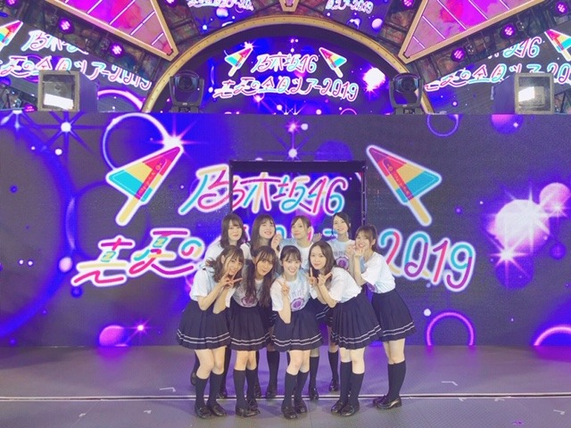
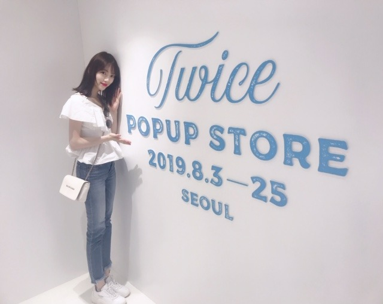
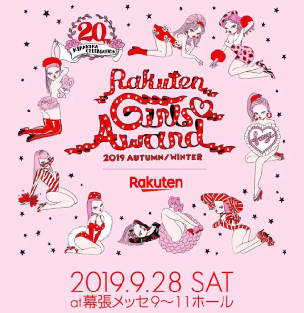

2019/0906Fri芋栗秋刀魚柿全部すき

神宮ライブ3日間ありがとうございました！
今年も、最高の夏の思い出ができました☺︎
乃木坂46として毎年、神宮球場のステージに立たせていただけてその年ごとに感じることや景色が違って凄く成長させていただけるライブだなぁと感じています
1期生の方の力強い背中をみながら私達2期生はついていくことにとにかく必死だった初めての神宮ライブ
アンダーとしてステージに立ち、別れ際もっと好きになるという大好きな曲を披露し悔しさも味わいながら成長できたライブ
みんなでたくさん汗を流して泣いてぶつけて楽しんだ初めての期生別ライブ
２会場同時開催でバースデーライブとしていろんな曲を振り返ったライブ
そして今回は4期生も入り、新たな乃木坂46の形を魅せたライブでした☺︎
キャプテンの玲香さんの卒業セレモニーもありました
玲香さんが終始笑顔でライブをしていたのが凄く印象的で、たくさん残してくださったものを残されたメンバー達で大切にしていけたらな、と思いました
本当にお疲れ様でした☺︎
グループがいろんな形に変わっていくのを毎年ひしひしと感じます
現状維持 というものはアイドル界にはなくて一人としてもグループとしても常に成長や進化をしていかなくてはいけないからそんな現実を受け入れながらも、たまに懐かしみながら...前を見ています。見るしかないです。でも、楽しいです。素敵な部分だけ変わらず残っていくことができたらきっとこれからも楽しいのかな。
変わってほしくない部分や受け継いでいってほしい部分ももちろんたくさんあって、そんなことは私達が後輩にもしっかりと伝えていかなきゃなと思うし
これからの乃木坂を創っていく後輩には先輩の真似や代わりではなくて、"他の誰でもない自分自身"として自信を持ってもらえるように私もサポートしていきたいです✨
頼りないけど...
もちろん！私も頑張る！！
ずっと乃木坂でいれたら幸せなのになぁ
来世も。来来世も。このメンバーで。
打ち上げもすーごく楽しくてたくさん笑いました！
純奈、笑いすぎてお腹筋肉痛になったって。笑
2期生同じ机で、みんなで動画回したり盛り上がったり❤︎
幸せ！
もっとたくさん思い出作りたいなぁ 大好きだぁ

私服もネイルも白が多かった夏。
夏もいいけど秋の方がわたしはもっと好き！生まれ月っていうのもあるけど何よりご飯が美味しいですよね✨
あっ、でも食べ過ぎ注意ですね......

そして
9.28のガールズアワードに出させていただきます❤︎
わ〜い！嬉しい〜！！！！
楽しみです
もうすっかり秋なので
衣替えをしたり
くすみクリームベージュ系ネイルにしたり
ルームウェアを変えたり
ルームデュフューザーや香水を秋冬向けの重めの甘いのにしてみたり
メイクも、落ち着いたブラウンやくすみ系、オレンジを混ぜたメイクに変えて
秋を楽しみ始めています...❤︎
お部屋のスリッパも、モコモコにしよ。
もうコートまで買っちゃった。笑 早いかな。笑
今年の秋冬は春夏よりも"甘々気分"です
くすみ系の色とかベージュやブラウンやピンクで甘女子たのしみたいなぁ❤︎
これはarでブラウンネイルしてもらったとき❤︎
マーブルチョコみたい❤︎❤︎❤︎
最近ネイル変えたのでまたブログ載っけますね〜
良い匂いのハンドソープを使うと癒される♪
イソップ、ジョンマスター、ジョーマローンあたりも好き
最近は素敵な家具をみてね、
あー！いつかこんな家具を置ける広いおうちに住みたい！
って勝手に想像で模様替えを楽しんでいます。
海外のインテリアってかわいいのよね。
あと、久しぶりにピーマン食べたら
なんだかんだ美味しかったです
ピーマンの肉詰めの"ピーマン"と"肉"のバランス良すぎて毎度感動
では☺︎
2019/09/06 10:00
コメント(262)
堀ちゃんブログ更新ありがとう、待ってたよ。
真夏の全国ツアーお疲れさまでした。
名古屋二日、神宮初日行ったよ。
堀ちゃんトロッコ乗ったり前に来る機会が増えて嬉しかった。最高のライブだった。
乃木坂はどんな形になっても最高ですね。
もう秋だね、秋の堀ちゃんファッション楽しみにだよ。
ガールズアワードでるんだ、これも楽しみだ。
すでにコート買ったんだ、はっや(笑)
でも今から冬のファッションの準備とはさすがです、冬になってからじゃ遅いもんね。
明日個握行くよ、超楽しみ。
ではではバイバイキーン
真夏の全国ツアーお疲れさまでした。
名古屋二日、神宮初日行ったよ。
堀ちゃんトロッコ乗ったり前に来る機会が増えて嬉しかった。最高のライブだった。
乃木坂はどんな形になっても最高ですね。
もう秋だね、秋の堀ちゃんファッション楽しみにだよ。
ガールズアワードでるんだ、これも楽しみだ。
すでにコート買ったんだ、はっや(笑)
でも今から冬のファッションの準備とはさすがです、冬になってからじゃ遅いもんね。
明日個握行くよ、超楽しみ。
ではではバイバイキーン
みおたんきゃわたん♡
ピーマン食べれるようになったんですね？
大人になりましたね(^-^)
ピーマン食べれるようになったんですね？
大人になりましたね(^-^)
こんばんはお疲れさま☺
神宮もお疲れさまでした✨
玲香ちゃん卒業。
寂しいけど、しっかりと皆で受け止めて、前に。
そして乃木坂上り坂、乃木坂メンバー全員で登ってほしいです☺
現状に甘んじず、一歩一歩前に向いてる堀ちゃん☺リーダーの自覚しっかりしてきたね✨
勿論、個人的仕事も頑張ってくださいね✨
ガルアワ頑張ってね～✨
10月15日が楽しみやんね☺
秋も美味しい食べ物あるやね！
秋の味覚✨
食わず嫌いはあるけど、食材好き嫌いないから堀ちゃん飯を食べてみたいや(笑)✨
なんてね☺
ではではまたね☺
体調には気をつけてくださいな✨
おでこ出しもなかなか良いよ☺
ほなね、堀ちゃん☺
神宮もお疲れさまでした✨
玲香ちゃん卒業。
寂しいけど、しっかりと皆で受け止めて、前に。
そして乃木坂上り坂、乃木坂メンバー全員で登ってほしいです☺
現状に甘んじず、一歩一歩前に向いてる堀ちゃん☺リーダーの自覚しっかりしてきたね✨
勿論、個人的仕事も頑張ってくださいね✨
ガルアワ頑張ってね～✨
10月15日が楽しみやんね☺
秋も美味しい食べ物あるやね！
秋の味覚✨
食わず嫌いはあるけど、食材好き嫌いないから堀ちゃん飯を食べてみたいや(笑)✨
なんてね☺
ではではまたね☺
体調には気をつけてくださいな✨
おでこ出しもなかなか良いよ☺
ほなね、堀ちゃん☺
未央奈ブログ更新ありがとう！
神宮お疲れ様〜
未央奈の自由の彼方見たかったけど見れなかった〜泣
やっぱり2期生大好きです！どの期生にも負けないくらい頑張ってね！あ、無理はしないでね
神宮お疲れ様〜
未央奈の自由の彼方見たかったけど見れなかった〜泣
やっぱり2期生大好きです！どの期生にも負けないくらい頑張ってね！あ、無理はしないでね
最近推し変したとか言われるけど、おれは未央奈推しや！！
こんばんは。
秋は秋刀魚食べないとですよね。
自分は、栗ご飯と秋刀魚の塩焼きのセットが一番の秋の味覚です。
お疲れの中、更新ありがとうございます。
感無量よ想いが詰まったブログですね。
神宮ライブは、夏一番の思い出となりました。
感動と興奮と癒しの連続でした。
自分は幸せ者です。
未央奈さん、乃木坂に出会えてホントよかったと再認識しましたよ。
書ききれないので、また明日にでも書きます。
光をありがとうございます。
やはり、唯一無二の存在です。
お身体には気をつけましょうね。
頑張って行きましょう！
秋は秋刀魚食べないとですよね。
自分は、栗ご飯と秋刀魚の塩焼きのセットが一番の秋の味覚です。
お疲れの中、更新ありがとうございます。
感無量よ想いが詰まったブログですね。
神宮ライブは、夏一番の思い出となりました。
感動と興奮と癒しの連続でした。
自分は幸せ者です。
未央奈さん、乃木坂に出会えてホントよかったと再認識しましたよ。
書ききれないので、また明日にでも書きます。
光をありがとうございます。
やはり、唯一無二の存在です。
お身体には気をつけましょうね。
頑張って行きましょう！
堀様更新待ってました！！
今日ね、親友と喧嘩したの。
私は、なんか怒られ損みたいな感じなんだけどね。
未央奈ちゃんの写真見て耐えた
堀様大好き
次の更新待ってます
今日ね、親友と喧嘩したの。
私は、なんか怒られ損みたいな感じなんだけどね。
未央奈ちゃんの写真見て耐えた
堀様大好き
次の更新待ってます
みおな応援してるよー＼(^-^)／
堀ちゃんお疲れ様です！
ねーどんな顔をしても女神って完璧です！
神宮公演もお疲れ様でした！玲香さんの卒業は悲しーですがここがまた乃木坂が次の坂を登るチャンスだと思います！
明日のカウントダウンTV楽しみにしてます！
ねーどんな顔をしても女神って完璧です！
神宮公演もお疲れ様でした！玲香さんの卒業は悲しーですがここがまた乃木坂が次の坂を登るチャンスだと思います！
明日のカウントダウンTV楽しみにしてます！
焼いた秋刀魚をただで食べさせてくれる
目黒だったけなぁ？ 秋刀魚まつり？
よく解らないけど。
最近の住宅事情で家で秋刀魚を焼くと火事に間違われる
な～んて事があるみたいです。
堀ちゃん、神宮ライブお疲れ様でした！
純奈ちゃんのセーラームーン、迫力ありそうです
2期生の頑張り、とっても頼もしくなったね
堀ちゃんも新曲で頑張って下さい
目黒だったけなぁ？ 秋刀魚まつり？
よく解らないけど。
最近の住宅事情で家で秋刀魚を焼くと火事に間違われる
な～んて事があるみたいです。
堀ちゃん、神宮ライブお疲れ様でした！
純奈ちゃんのセーラームーン、迫力ありそうです
2期生の頑張り、とっても頼もしくなったね
堀ちゃんも新曲で頑張って下さい
神宮おつかれさまー
めちゃめちゃかわいい♡♡♡
大好き♡♡♡♡♡♡♡♡♡♡
めちゃめちゃかわいい♡♡♡
大好き♡♡♡♡♡♡♡♡♡♡
神宮お疲れ様でした！！すっごい輝いてました ☼ ネイル可愛い！その色好き！毎回未央奈ちゃんのファンション参考にしてる ( ◜௰◝ ) arの未央奈ちゃんも好き〜〜 デコ出しもありがとうございます (＞＜)❤︎
更新ありがとう
僕はライブ行けてないけど未央奈ちゃん
お疲れさま。
ネイル確かにチョコみたいですね。
僕もピーマン好きです。
写真全部かわいいです
僕はライブ行けてないけど未央奈ちゃん
お疲れさま。
ネイル確かにチョコみたいですね。
僕もピーマン好きです。
写真全部かわいいです
好き。
未央奈ブログ更新ありがとう！
神宮ライブお疲れ様！僕は3日目に行ったよ。夏フリはセンターだし、自由の彼方は本当にかっこよかったし、ダンスも綺麗だったし、今まで見たことない未央奈を見られて本当に楽しかったよ。今年も最高の夏の思い出をありがとう！
変わっていく乃木坂のことも後輩のことも、未央奈は本当によく考えてるんだね。未央奈が乃木坂にいてくれてよかったなあと思う。未央奈がこれからもたくさん笑えてずっと幸せでいてほしいな。
秋は美味しいものがいっぱいあるね。未央奈は細いから美味しい秋の味覚をたくさん食べていいと思うよ。
ガルアワ出るんだね。すごい！楽しみ！
秋に合わせて色々な楽しみかたがあるんだなあ。さすが未央奈は女の子を楽しんでるね。甘女子な未央奈も見たいな。
ピーマンの肉詰めのバランスの良さすごくわかる！
では！
神宮ライブお疲れ様！僕は3日目に行ったよ。夏フリはセンターだし、自由の彼方は本当にかっこよかったし、ダンスも綺麗だったし、今まで見たことない未央奈を見られて本当に楽しかったよ。今年も最高の夏の思い出をありがとう！
変わっていく乃木坂のことも後輩のことも、未央奈は本当によく考えてるんだね。未央奈が乃木坂にいてくれてよかったなあと思う。未央奈がこれからもたくさん笑えてずっと幸せでいてほしいな。
秋は美味しいものがいっぱいあるね。未央奈は細いから美味しい秋の味覚をたくさん食べていいと思うよ。
ガルアワ出るんだね。すごい！楽しみ！
秋に合わせて色々な楽しみかたがあるんだなあ。さすが未央奈は女の子を楽しんでるね。甘女子な未央奈も見たいな。
ピーマンの肉詰めのバランスの良さすごくわかる！
では！
みおなかわいい！大好き！2期生愛が強くて先輩にも後輩にも頼られるみおなほんとうに尊敬します！これからも大好きです！
未央奈、
芋、
栗、
秋刀魚、
梨、
葡萄、
みんな美味しいよね～
全部食べちゃって下さい。
最近、
お年頃のせいなのか、
ダイエットしてるのか、
少し痩せすぎのような気がして、
凄く心配です。
乃木坂の活動やら、
色々とモデル仕事やら、
色々と節制しないといけないのかもしれないけど、
未央奈は身体が凄くあまり強くないから、
心配です。
どんな風になっても、
未央奈は可愛いし、
ずっと推し続けるんだけど、
色々あるんだよね…
でも、
食べよう！！
それが、
一番だよ！！
くれぐれも、
身体には気をつけて頑張ってね。
芋、
栗、
秋刀魚、
梨、
葡萄、
みんな美味しいよね～
全部食べちゃって下さい。
最近、
お年頃のせいなのか、
ダイエットしてるのか、
少し痩せすぎのような気がして、
凄く心配です。
乃木坂の活動やら、
色々とモデル仕事やら、
色々と節制しないといけないのかもしれないけど、
未央奈は身体が凄くあまり強くないから、
心配です。
どんな風になっても、
未央奈は可愛いし、
ずっと推し続けるんだけど、
色々あるんだよね…
でも、
食べよう！！
それが、
一番だよ！！
くれぐれも、
身体には気をつけて頑張ってね。
未央奈ちゃんも頼りなくなんかないです！
これからも、3期生、4期生に立派な背中を見せてって欲しいです！
2期生のみんながずっと仲良いのも聞いてるだけで幸せです
これからも、頑張ってください
これからも、3期生、4期生に立派な背中を見せてって欲しいです！
2期生のみんながずっと仲良いのも聞いてるだけで幸せです
これからも、頑張ってください
ブログ読んでると乃木坂キャプテン玲香さんの存在がすごく大きな感じられる。未央奈ちゃんもかなしみを、感じられる。前を向いて頑張って未央奈ちゃん。ガールズアワード出演おめでとうございます。さすがarモデル未央奈ちゃん。最高。ハンドソープ使ってみよう。これからもブログ更新楽しみに待ってます。それでは。
未央奈ちゃん、お疲れさまです。
３日間楽しめたようでよかったです！
乃木坂にとって変革の時期のようで
今度は世界旅ですかぁ。
舞台は日本に留まることなく
世界ですね～！
でも、北の大地にはなかなか
来ていただけなくて。
今度お忍びでもいいのでお待ちしております！
これからも未央奈ちゃんらしく
頑張ってくださいね！！！
応援しています！！！
３日間楽しめたようでよかったです！
乃木坂にとって変革の時期のようで
今度は世界旅ですかぁ。
舞台は日本に留まることなく
世界ですね～！
でも、北の大地にはなかなか
来ていただけなくて。
今度お忍びでもいいのでお待ちしております！
これからも未央奈ちゃんらしく
頑張ってくださいね！！！
応援しています！！！
未央奈ブログ更新ありがとう！
神宮初日とライブビューイングに行ったよ
自由の彼方でセンター努めて輝いてたね
明日の個握には行けないけど明後日の全握行くから未央奈と話すの楽しみ
未央奈にはずっと未央奈にとっても大好きな乃木坂にいてほしい
神宮初日とライブビューイングに行ったよ
自由の彼方でセンター努めて輝いてたね
明日の個握には行けないけど明後日の全握行くから未央奈と話すの楽しみ
未央奈にはずっと未央奈にとっても大好きな乃木坂にいてほしい
未央奈さん、こんばんは。
ピーマンの肉詰め、美味しいですね。
バランスのとれた食事で体調管理しかっりとね。
そして、いつまでも乃木坂・・・。
みんな素敵なメンバーなので続くよ。
台風が近づいているので気をつけてね。
ピーマンの肉詰め、美味しいですね。
バランスのとれた食事で体調管理しかっりとね。
そして、いつまでも乃木坂・・・。
みんな素敵なメンバーなので続くよ。
台風が近づいているので気をつけてね。
こんばんは((o(^∇^)o))みおにゃ♪ヽ(´▽｀)/今日は夏の気温でしたな‼️湿気が少ないだけマシ！だったが・・・あちー❗(´Д｀)
未央奈さん今日も、可愛いですね❤️
ライブお疲れ様でした
これからも頑張ってくださいね
ライブお疲れ様でした
これからも頑張ってくださいね
未央奈～！
やっぱり乃木坂はいいね！
大好きだ❤️そして未央奈のことも大好きだよ❤️
前ブログに長文コメントしたからここでは短めでいくね！神宮でのライブ本当に最高でした！！
最終日に参加出来て幸せだったよ～！
当たるか分からないけど、またライブ行くつもりなので今度は未央奈を何らかの形で目の前で見れたらいいな♪
本当に一生の思い出になるだろうなぁ～☺️
名古屋いきたいけど行けないよ～(つд；*)
ファンの方と明日、明後日は楽しんでね！
私は来月と再来月会いに行くよ！
明日は仕事頑張るね！
やっぱり乃木坂はいいね！
大好きだ❤️そして未央奈のことも大好きだよ❤️
前ブログに長文コメントしたからここでは短めでいくね！神宮でのライブ本当に最高でした！！
最終日に参加出来て幸せだったよ～！
当たるか分からないけど、またライブ行くつもりなので今度は未央奈を何らかの形で目の前で見れたらいいな♪
本当に一生の思い出になるだろうなぁ～☺️
名古屋いきたいけど行けないよ～(つд；*)
ファンの方と明日、明後日は楽しんでね！
私は来月と再来月会いに行くよ！
明日は仕事頑張るね！
嫁に欲しい！？
神宮、ライビュだったけど見に行ったよ〜〜〜本っ当に楽しい時間を！感動の時間を！ありがとうううううう
素敵なグループのファンでいられて幸せです
変わってほしくないっていうの、感じること正直ある。でも3期生や4期生が一期二期みたいに"他の誰でもない自分自身"をもっと見せてくれる日が楽しみだなぁと、思えたブログでちた。みおなありがとう、なんか私の中で割り切れた！
素敵なグループのファンでいられて幸せです
変わってほしくないっていうの、感じること正直ある。でも3期生や4期生が一期二期みたいに"他の誰でもない自分自身"をもっと見せてくれる日が楽しみだなぁと、思えたブログでちた。みおなありがとう、なんか私の中で割り切れた！
ブログ更新ありがと！！
大人なのにさらに大人になってる！！
大人なのにさらに大人になってる！！
マｰブルチﾖコ、ア、ほんまや
でも可愛いよ(*^ー^)ノ♪大好き＼(^^)／
でも可愛いよ(*^ー^)ノ♪大好き＼(^^)／
今回のライブほど
これまでの様々なライブシーンが走馬灯の様に頭をよぎるライブはなかったです^_^
まさに伝説ライブ！
これまでの様々なライブシーンが走馬灯の様に頭をよぎるライブはなかったです^_^
まさに伝説ライブ！
未央奈さん、こんばんは
ライブお疲れ様でした
夏の思い出ができて良かったですね
打ち上げも楽しそう
いつも前向きな文章
ありがとうございます
読んでいて気分も上がるし
先輩や後輩を思う気持ち
見習うことばかりです
食欲の秋
未央奈さん頑張ってるん
だから食べちゃいましょ 笑
ピーマンの肉詰め食べた～い！
ガールズアワード楽しみですね
秋のオシャレも盛りだくさん
マーブルチョコの表現
面白いです(^_^)
未央奈さんのおでこ大好き！
ハンドソープ
いろんな種類があるんですね
海外のインテリア
色合いやデザインなど
個性的なものが多くて好きです
玲香さんのご卒業
おめでとうございます
新キャプテンの真夏さんを
盛り立ててくださいな(^_^)
ライブお疲れ様でした
夏の思い出ができて良かったですね
打ち上げも楽しそう
いつも前向きな文章
ありがとうございます
読んでいて気分も上がるし
先輩や後輩を思う気持ち
見習うことばかりです
食欲の秋
未央奈さん頑張ってるん
だから食べちゃいましょ 笑
ピーマンの肉詰め食べた～い！
ガールズアワード楽しみですね
秋のオシャレも盛りだくさん
マーブルチョコの表現
面白いです(^_^)
未央奈さんのおでこ大好き！
ハンドソープ
いろんな種類があるんですね
海外のインテリア
色合いやデザインなど
個性的なものが多くて好きです
玲香さんのご卒業
おめでとうございます
新キャプテンの真夏さんを
盛り立ててくださいな(^_^)
未央奈ちゃんブログ更新ありがとう!
毎年同じ場所でライブをしても、景色が違うのは成長している証拠ですね。
新しい乃木坂を皆と一緒に作り上げていきましょう!応援してます☺️
毎年同じ場所でライブをしても、景色が違うのは成長している証拠ですね。
新しい乃木坂を皆と一緒に作り上げていきましょう!応援してます☺️
変わっていくもの。
変わらないもの。
どちらが良い悪いではなく、変化は必要だと思います。
変化しなくなったものは、存続は難しい。
九月二十八日は、ワタシ誕生日でした。
変わらないもの。
どちらが良い悪いではなく、変化は必要だと思います。
変化しなくなったものは、存続は難しい。
九月二十八日は、ワタシ誕生日でした。
神宮ライブを初めて観て、かなり楽しめました！
最高の時間をありがとう！
まだ暑いから体調には気をつけてね！
最高の時間をありがとう！
まだ暑いから体調には気をつけてね！
神宮最高でした。
ブログ更新ありがとうです！
ライブ振り返ると色々な事思い出しますね。
辛い事、楽しい事、それら全てが今の乃木坂を作ってるんですね。
これからも乃木坂で頑張ってね✨
ずっと応援してます
体調には気を付けて頑張ってください❗
ライブ振り返ると色々な事思い出しますね。
辛い事、楽しい事、それら全てが今の乃木坂を作ってるんですね。
これからも乃木坂で頑張ってね✨
ずっと応援してます
体調には気を付けて頑張ってください❗
未央奈めっちゃかわいい！！！
未央奈ほんとに美人すぎる、美しいです
未央奈がすきです。
永遠に推せます。
未央奈がすきです。
永遠に推せます。
ライブお疲れ様でした。
グループで大切にしている部分は変えず、
より良く出来る部分を変えていければいいですよね。
ときどき壁を壊さないといけないけど(笑)
悩み過ぎないでね～
筋肉痛になる理由･･･それでいいの？(笑)
ライブとかなら格好がつくのにね～
（唇に特徴あるキャラの名前にしがち。笑）
そうそう。
秋は美味しいもの多いよね～
収穫期ですもんね。
お腹とほっぺたでしたっけ？(笑)
甘女子！？
そんな言葉が･･･スイー･･･あま～～い！
あ、違うよ。
マーブルチョコじゃないよ。(笑)
ピーマン･･･
あ、う～～ん･･･ピーマン。
ち、違うよ～
想像すると唾液を発するものと、
野菜ヒーローが苦手なだけだよ～
好き嫌いが多いわけじゃないよ～
グループで大切にしている部分は変えず、
より良く出来る部分を変えていければいいですよね。
ときどき壁を壊さないといけないけど(笑)
悩み過ぎないでね～
筋肉痛になる理由･･･それでいいの？(笑)
ライブとかなら格好がつくのにね～
（唇に特徴あるキャラの名前にしがち。笑）
そうそう。
秋は美味しいもの多いよね～
収穫期ですもんね。
お腹とほっぺたでしたっけ？(笑)
甘女子！？
そんな言葉が･･･スイー･･･あま～～い！
あ、違うよ。
マーブルチョコじゃないよ。(笑)
ピーマン･･･
あ、う～～ん･･･ピーマン。
ち、違うよ～
想像すると唾液を発するものと、
野菜ヒーローが苦手なだけだよ～
好き嫌いが多いわけじゃないよ～
ライブお疲れ様☺︎
未央奈、ブログ更新ありがとう＼(^o^)／
神宮ライブ3日間お疲れ様！
ライブビューイングでの参戦だったよ！
乃木坂のライブ初めて観たけど素晴らしいライブだった(*´∀`)♪
自由の彼方の未央奈凄く格好良かったよ！
素敵でした(*^O^*)
そんなバカな…の最後の変顔は安定かわいさでキュンキュンしたよ(*´ω｀*)
今年の夏一番の思い出になった～(*´∀｀)
ありがとう(*≧∀≦*)
名古屋の全国握手会行くよ！
ヨロシクです！
では(*￣∇￣)ノ
神宮ライブ3日間お疲れ様！
ライブビューイングでの参戦だったよ！
乃木坂のライブ初めて観たけど素晴らしいライブだった(*´∀`)♪
自由の彼方の未央奈凄く格好良かったよ！
素敵でした(*^O^*)
そんなバカな…の最後の変顔は安定かわいさでキュンキュンしたよ(*´ω｀*)
今年の夏一番の思い出になった～(*´∀｀)
ありがとう(*≧∀≦*)
名古屋の全国握手会行くよ！
ヨロシクです！
では(*￣∇￣)ノ
本当現状維持は、駄目ですね。
来週から転職するので頑張って働きますわ。
息子がＬＩＶＥ映像見て踊ってます。
来週から転職するので頑張って働きますわ。
息子がＬＩＶＥ映像見て踊ってます。
未央奈ブログ更新ありがとう！
秋はやっぱり勉強かな！(受験生なので)
相変わらず可愛すぎです
秋はやっぱり勉強かな！(受験生なので)
相変わらず可愛すぎです
神宮３日間本当にお疲れ様。
乃木坂ライブの聖地神宮に行けなかったけど、ライブビューイングで玲香の卒業コンサート観ることが出来たので最高の夏の思い出が出来、本当に楽しかったよ。
乃木坂ライブの聖地神宮に行けなかったけど、ライブビューイングで玲香の卒業コンサート観ることが出来たので最高の夏の思い出が出来、本当に楽しかったよ。
ブログ更新ありがとう☺︎
改めて、真夏の全国ツアーお疲れさまでした！
私はライブビューイングで観ました~未央奈ちゃんの夏フリのセンターはとても嬉しかったしキラキラしていました！
自由の彼方はダンスがとても綺麗でしなやかで儚さも強さも感じました！
これからの乃木坂もずっと好きでいたいです、そんなことを思えるのは未央奈ちゃんのおかげです。
乃木坂のことを親身に考える未央奈ちゃんが大好きです
また新しくもなる乃木坂、未央奈をみるのもすごい楽しみな思いでいっぱいです。
ずっと未央奈ちゃん、乃木坂46を応援したいです！
秋には文化祭とか体育祭があって楽しいこといっぱいです☺︎
私もベージュの服欲しいなあ…
季節の変わり目は体調崩しやすくなると思うから体調気をつけてね、ゆっくり休んでね、、
未央奈ちゃん初期のころからずっと肌白くて指綺麗だよね憧れる…
ハンドケアはどんなことしてるんですか~♡
明日明後日の握手会は行けなくて残念だけど、10月に会えるのが本当に楽しみ~（ ; ; ）
そのために勉強頑張ります！笑
改めて、真夏の全国ツアーお疲れさまでした！
私はライブビューイングで観ました~未央奈ちゃんの夏フリのセンターはとても嬉しかったしキラキラしていました！
自由の彼方はダンスがとても綺麗でしなやかで儚さも強さも感じました！
これからの乃木坂もずっと好きでいたいです、そんなことを思えるのは未央奈ちゃんのおかげです。
乃木坂のことを親身に考える未央奈ちゃんが大好きです
また新しくもなる乃木坂、未央奈をみるのもすごい楽しみな思いでいっぱいです。
ずっと未央奈ちゃん、乃木坂46を応援したいです！
秋には文化祭とか体育祭があって楽しいこといっぱいです☺︎
私もベージュの服欲しいなあ…
季節の変わり目は体調崩しやすくなると思うから体調気をつけてね、ゆっくり休んでね、、
未央奈ちゃん初期のころからずっと肌白くて指綺麗だよね憧れる…
ハンドケアはどんなことしてるんですか~♡
明日明後日の握手会は行けなくて残念だけど、10月に会えるのが本当に楽しみ~（ ; ; ）
そのために勉強頑張ります！笑
堀ちゃん、こんばんは。
いつもブログ、ありがとうっ！
また明日＼(・∀・)／
いつもブログ、ありがとうっ！
また明日＼(・∀・)／
こんばんは。お疲れ様です。言わせてください。いつも他の人に配慮が出来る未央奈ちゃんが、僕は大好きです。ツアーお疲れ様でした。初の乃木坂ライブ、最高の思い出になりました。
これからも堀未央奈推しです。本当にお疲れ様でした！
これからも堀未央奈推しです。本当にお疲れ様でした！
みおなちゃん更新ありがとう╰(*´︶`*)╯♡
真夏の全国ツアー全日程が終了しましたね(*´꒳`*)
神宮3日間もお疲れ様でした٩(๑❛ᴗ❛๑)۶
自分は福岡2日間を会場で、神宮最終日をライブビューイングで見てたよ〜(๑>◡<๑)
楽しい時間をありがとう（╹◡╹）♡
れいかちゃんの卒業でもありましたね（；＿；）
ご卒業おめでとうございます！
偉大な先輩、キャプテンでしたね(*´-`)
これからの真夏キャプテンでの乃木坂46にも期待してます･:*+.\(( °ω° ))/.:+
後輩メンバーさんにも先輩方から学んだ色んな事を伝えていかないとですね(๑˃̵ᴗ˂̵)
大変やろうけど頑張ってね(● ˃̶͈̀ロ˂̶͈́)੭ꠥ⁾⁾
応援しております
打ち上げもすごく楽しかったなら良きでしたね♪(๑ᴖ◡ᴖ๑)♪
笑いすぎてお腹筋肉痛ってなかなかやね笑
ガールズアワード楽しんでね〜（╹◡╹）♡
もう秋になりますな〜
コートは早いのでは笑
でも急に秋を通り越して寒むくなる事もあるからもだから気を付けないとね(*´꒳`*)
ブラウンネイル可愛いね（╹◡╹）♡
確かにマーブルチョコかも笑
想像での模様替え楽しそうだね！
いろんな家具を置けるくらいの広いお家に住んでみたいものです(´・∀・｀)
ピーマンの肉詰め良き(๑˃̵ᴗ˂̵)
真夏の全国ツアー全日程が終了しましたね(*´꒳`*)
神宮3日間もお疲れ様でした٩(๑❛ᴗ❛๑)۶
自分は福岡2日間を会場で、神宮最終日をライブビューイングで見てたよ〜(๑>◡<๑)
楽しい時間をありがとう（╹◡╹）♡
れいかちゃんの卒業でもありましたね（；＿；）
ご卒業おめでとうございます！
偉大な先輩、キャプテンでしたね(*´-`)
これからの真夏キャプテンでの乃木坂46にも期待してます･:*+.\(( °ω° ))/.:+
後輩メンバーさんにも先輩方から学んだ色んな事を伝えていかないとですね(๑˃̵ᴗ˂̵)
大変やろうけど頑張ってね(● ˃̶͈̀ロ˂̶͈́)੭ꠥ⁾⁾
応援しております
打ち上げもすごく楽しかったなら良きでしたね♪(๑ᴖ◡ᴖ๑)♪
笑いすぎてお腹筋肉痛ってなかなかやね笑
ガールズアワード楽しんでね〜（╹◡╹）♡
もう秋になりますな〜
コートは早いのでは笑
でも急に秋を通り越して寒むくなる事もあるからもだから気を付けないとね(*´꒳`*)
ブラウンネイル可愛いね（╹◡╹）♡
確かにマーブルチョコかも笑
想像での模様替え楽しそうだね！
いろんな家具を置けるくらいの広いお家に住んでみたいものです(´・∀・｀)
ピーマンの肉詰め良き(๑˃̵ᴗ˂̵)
ブログいつもありがとうございます
ピーマンで思い出しました、
乃木中での日村さんとの"別れシーン"を笑
ピーマンの肉詰めはケチャップ派ですが、からし醤油もありです✨
ピーマンで思い出しました、
乃木中での日村さんとの"別れシーン"を笑
ピーマンの肉詰めはケチャップ派ですが、からし醤油もありです✨


そんなとこが 好き